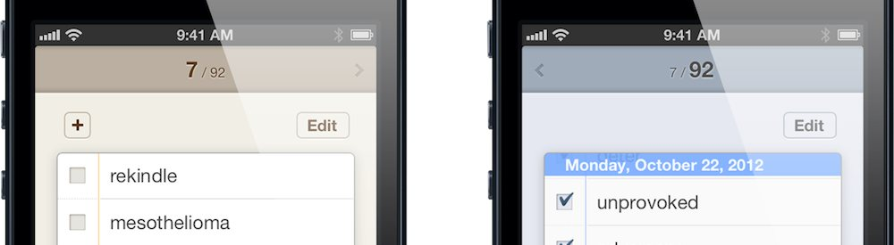
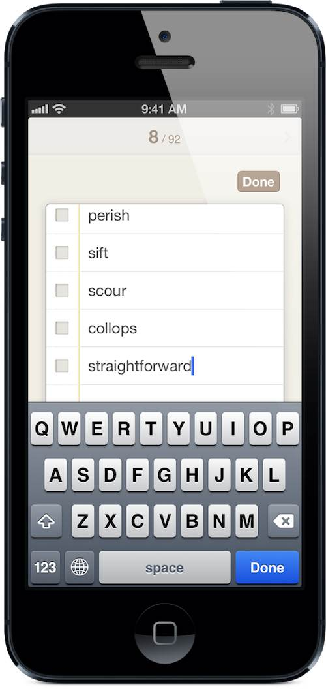
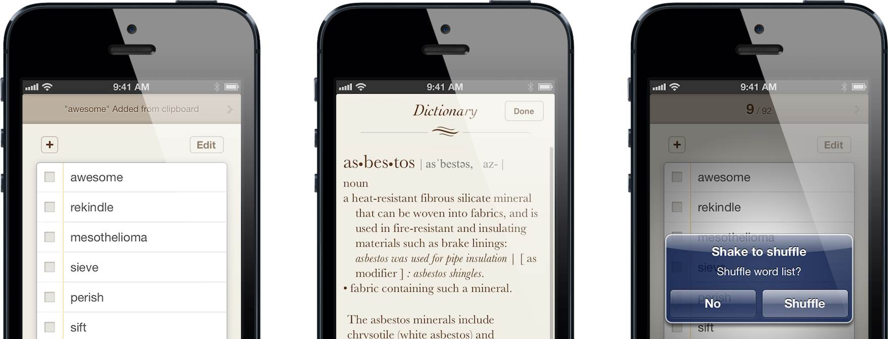

ワードリマインダー
単語暗記にいい To-do + 辞書
ワードリマインダー(WordRemindr)は単語暗記のために作られたTO-DOリストスタイルのiPhoneアプリケーションです。覚えるリストに単語を追加して、一回タップでiOSに内蔵された辞書を使って言葉の意味を調べることができます。単語の意味を確実に暗記した後は、その単語をチェックして覚えたリストに送ってください。
App Storeから170円でダウンロード
単純な美しさ
WordRemindrはただ二つの画面で構成されます。覚えるリストとおぼえたリスト、シンプルな構成で暗記に集中することができます。しつこい機能がなくてもっと早く辞書を調べる事ができます。
基本機能
- 簡潔で直観てきな インタフェース：左、右スワイプしてリストを転換できます。iOS基本テーブルと同じリストを使用し、使いやすいです。
- 多言語サポート ：ワードリマインダーはシステム辞書がサポートするすべての言語をサポートしています。英語、日本語、中国語、ドイツ語、フランス語、スペイン語の単語の意味を簡単に調べる事ができます。
- オフライン実行 ：システム内蔵辞書を使用するから、ネットワーク接続は必要ありません。
- リストの並べ替え：覚えたリストにある単語は覚えた日を基準に並べ替えています。毎日単語暗記の進捗状況を確認することができます。
- Voice over互換：Voice overサポートはただ視覚障害者のためのものではありません。誰もがVoice overを利用して、単語がどのように発音されるかがわかります。

スマートな機能
スマートペースト
Safariや他のアブリで単語を選択、コピーした後ワードリマインダーに戻ると、自動的に覚えるリストへ貼り付けます。
iOSシステム辞書との統合
一回タブでiOSに内蔵された辞書で単語の意味を見ることができます。
シェイク＆シャッフル
順番どおりに整理された単語は覚えたという錯覚を起こします！デバイスを振って単語の順序をランダムに混ぜることができます。
注意：iOSの内蔵辞書は現在キーボードの言語設定によって単語を検索します。例えばキーボードの言語を英語に設定、英語の単語を検索すると、英英辞書から探します。設定が日本語のまま英語を検索すると、英和辞典から探します。